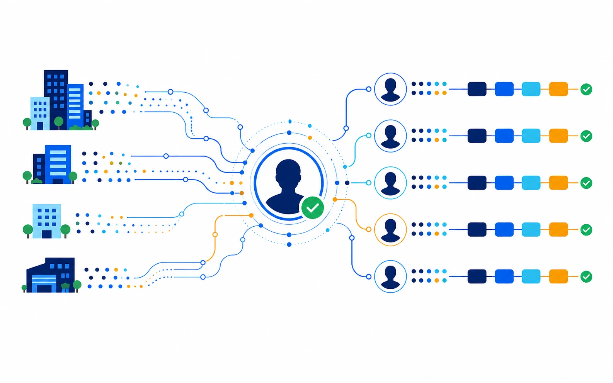

Route high-fit, high-intent profiles to the account owner with concise context.
B2B sales and marketing
Turn quiet research
into named pipeline.
Resolve the people behind target-account traffic, understand their buying topics, and route the right signal to sales before interest goes cold.

Identifyresolve individual visitors from target accounts
Prioritizecombine fit, behavior, and open-web intent
Routesend context into CRM and marketing automation
Measureconnect audience action to journey progression
The opportunity
Your next buying group may already be on the site.
Form fills reveal demand late. MyProspects gives B2B teams a controlled way to recognize earlier research and decide what deserves action.
- Person and account context. See the individual, company, role, and journey together.
- Topic-level intent. Connect product pages to related research happening beyond your domain.
- Explainable priority. Show sellers why the person was routed and what they care about.
Create topic-specific audiences before a visitor converts on a form.
Apply shared fit, consent, suppression, and routing rules.
The B2B workflow
From target-account visit to coordinated action.
Observe
Capture meaningful product and solution research.
Resolve
Connect the session to a person and account.
Prioritize
Score fit, topic intensity, and recency.
Activate
Route CRM, nurture, and media audiences.
Built for revenue operations
Deliver context, not another undifferentiated lead list.
Use narrow audience tiers and destination rules so each team receives only the signal it can act on.
No. You define fit, intent, and frequency thresholds before a person is eligible for CRM routing.
Yes. MyProspects can supply identity and signal context to complement existing account and lead scoring.
The core pixel is designed for a 24-48 hour implementation, followed by audience and routing validation.
Find the buying groups already researching you.
Start with one domain, one audience tier, and one clear revenue workflow.